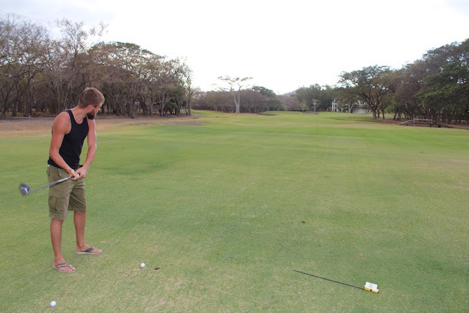
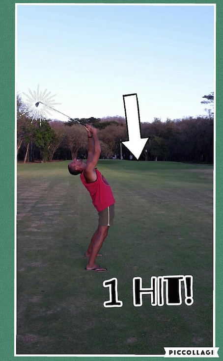
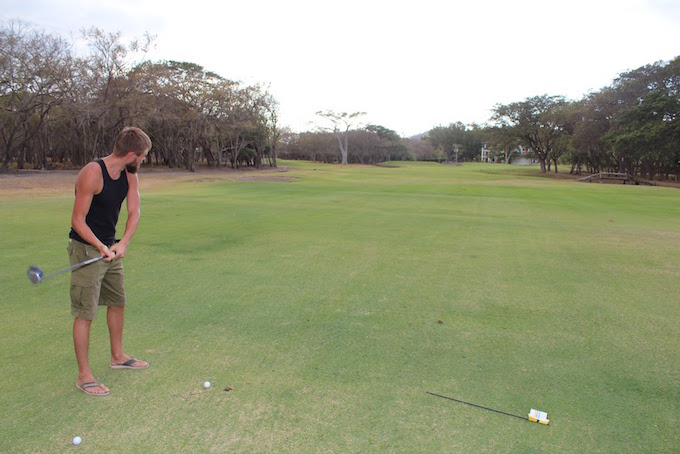
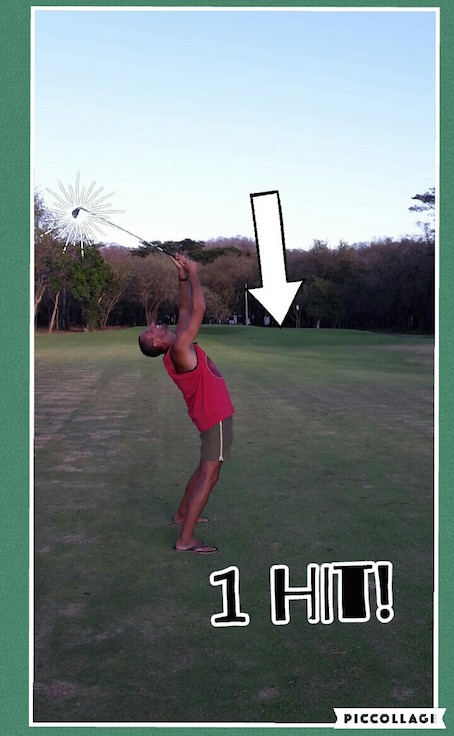

Podróż
The journey
Przejazd przez granicę Kostaryka-Nikaragua to dość egzotyczne przeżycie. Nic nie jest oczywiste, nik nic nie wie,
poza "pracownikami" przejścia granicznego, którzy wiedzą wszystko, ale uciekają na widok policji... w kilku różnych
okienkach trzeba wpłacić prawie 20$ podatków (od osoby) za wyjazd z Kostaryki i wjazd do Nikaragui.
Kontrola paszportów też odbywa się w kilku różnych miejscach, także kilka kilometrów za wyznaczoną grznicą.
Ogólnie i tak udało nam się przejść bardzo sprawnie i szybko (tylko 2 godz!). Od granicy do Hacienda Iguana,
gdzie mieszkamy to też ok 2 godz jazdy autem wypożyczonym na granicy.
Drive through the Costa Rica-Nicaragua border is quite exotic experience. Nothing is obvious, speaker knows
nothing beyond the "employees" border crossing, who know everything, but run away at the sight
of the police ... in a few different boxes have to pay nearly $ 20 taxes (per person) for the trip from
Costa Rica and enter the Nicaragua. Passport control also takes place in several different locations,
several kilometers from a designated grznicą. In general, and so we were able to go very smoothly and
quickly (only 2 hours!). From the border to the Hacienda Iguana, where we live is also about 2 hours driving
a rental car at the border.

Nowy widok z sypialni
Our new bedroom view
Hacienda Iguana
...z prawdziwą Nikaraguą niewiele ma wspólnego. Jest to po prostu jeden z wielu zamkniętych kompleksów dla
turystów. Są tu restauracje, sklepiki i baseny... "tylko dla mieszkańców", a dwie bramy wjazdowe kontrolowane
są 24/7. Ale nie możemy narzekać. Obijamy się i korzystamy ;)
Korzystamy z "klubu" na plaży i z pola golfowego, z basenu i z lekcji jogi, dzieci skaczą na trampolinie,
przsiadują w basenie i karmią kotki :)
... With real Nicaragua has little in common. This is just one of many complexes closed for tourists.
There are restaurants, shops and swimming pools ... "only for the residents," and two gates are controlled
24/7. But beyond that we can not complain. Padding and use;) We use the "club" on the beach and a golf course,
swimming pool and yoga lessons, the children jump on the trampoline and feed the cats :)


"Klub plażowicza" :)
The beach club

"Klub plażowicza" - strefa relaksu ;)
The beach club - relax zone

...klub wieczorem
The club in the evening


 



Pełnia szczęścia
Pure happiness

Pełnia szczęścia 2
Pure happiness 2